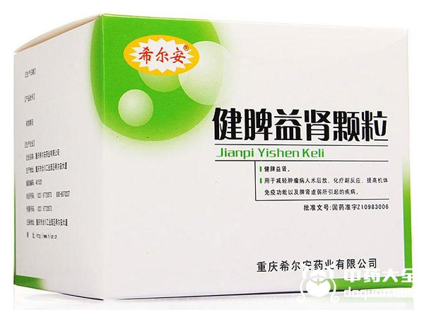
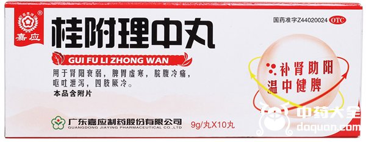
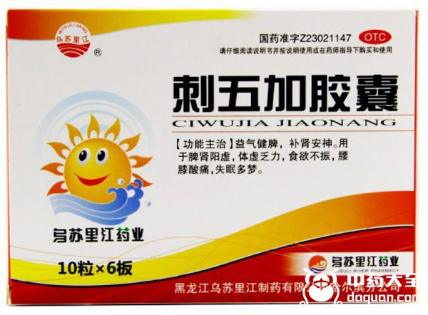
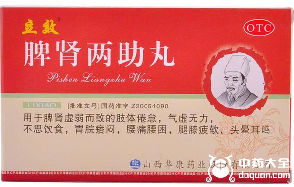
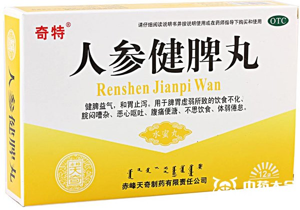
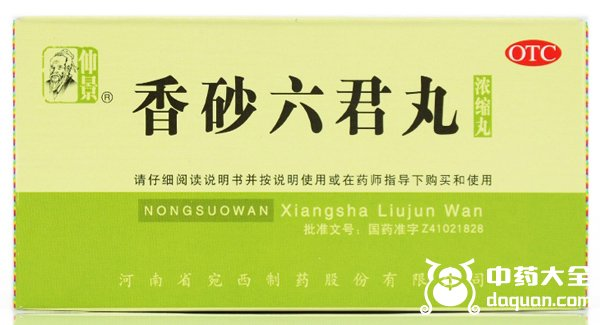
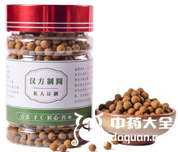

原文连接:https://www.daquan.com/post/11095.html
近来随着养生话题的广泛讨论，人们开始对自身的小症状有了一些深入的认识，比如说像经常消化不良，容易腹胀，是因为脾虚;如果小便不利，浮肿是因为肾虚导致排水不利。当身体出现这些症状的时候，可以吃一些中药来调养，比如枸杞，补肾生精，养肝明目，对脾胃也有一定的调养效果。除此之外，想达到调养效果，也可以选择健脾补肾的中成药，下面为大家介绍几种常见的补肾健脾的中成药。
补肾健脾的中成药有哪些
1、 健脾益肾颗粒

健脾益肾颗粒的主要成分是党参、枸杞子、女贞子、白术，对健脾益肾有很好的效果，像肿瘤病人手术后、化疗后，免疫力下降，脾胃和肾功能都很虚弱，可以服用健脾益肾颗粒来改善调理。
2、 桂附理中丸

桂附理中丸的主药为肉桂、附片、党参、炮姜，肉桂能补肾阳，炮姜常用于治疗脾胃虚寒，附片的作用也很多，在这里起一个温补脾肾的作用，几种药材合用达到温中健脾、补肾益阳的作用。像平时有腹痛腹泻、呕吐、手脚凉这些症状的人，多半是脾胃虚寒、肾阳不足，可以服用桂附理中丸来调理。
3、 刺五加胶囊

刺五加胶囊主要成分就是刺五加。刺五加药性温和，归脾、肺、心、肾经，对脾肾阳虚、肺气不足导致的困倦乏力、食欲不振、虚喘久咳、腰酸失眠等症状都有很好的滋补调养作用。因此刺五加胶囊的主要功效就是健脾益气、补肾安神。与它有同等功效的还有刺五加片和刺五加口服液。
4、 脾肾两助丸

脾肾两助丸顾名思义，脾肾双补，有健脾益气、滋补肝肾的功效，可以用于改善脾肾虚弱引起的困倦乏力、气虚、没食欲、腰酸等症状。用淡盐水送服即可，一般是一天两次，一次一丸。如果服药过程中有上火症状，可以改成隔天服用，另外注意饮食清淡。
5、 固本益肠片

固本益肠片的主要成分是党参、黄芪、炒白术、炮姜和补骨脂，其中补骨脂虽然名字听起来怪，但其实是常用的脾肾阳虚和下元不固的用药。补骨脂归脾、肾经，性温，有温脾止泻、纳气平喘的作用，同时能固精缩尿、补肾益阳。因此固本益肠片能用来治疗腹胀、持续腹痛、腹泻、大便稀粘等肠道问题，以及具有健脾补肾的功效。
6、 人参健脾丸

人参健脾丸主要成分是人参、白术、茯苓、山药，这些药材都对脾胃有很好的滋补作用，所以人参健脾丸有健脾益气、和胃止泻的功效。像日常也可以食用山药来调养脾胃，茯苓是比较易得的中药材，参就更不用说了，也可以用于平时进补。
7、 香砂六君丸

香砂六君丸是常见的用来治疗消化不良、腹胀、大便溏泄的用药。其主要成分是木香、砂仁、党参、茯苓、白术，茯苓补气益脾，木香、砂仁养胃，因此香砂六君丸有健脾和胃、补气的功效，用来治疗脾虚气滞。
8、 三肾丸

三肾丸主药是由鹿肾、狗肾、驴肾组成，以肾补肾，所以主治肾精亏损，有补肾益阳的效果。对于肾阳不足导致的腰膝酸软、四肢寒凉、气短神疲这些症状能起到改善作用。
结语：以上就是给大家介绍的补肾健脾的8种中成药，前五种都是脾肾同时进补，后三种是单独针对脾虚或者肾虚进行调养。像有类似疗效的，还有归脾丸、参苓白术散，除开中成药，大家平时也可以适量用枸杞泡水或者炖汤，这是最简易且没有副作用的滋补方式，对于脾胃和肾都能起到养护作用，并且成本也不高。